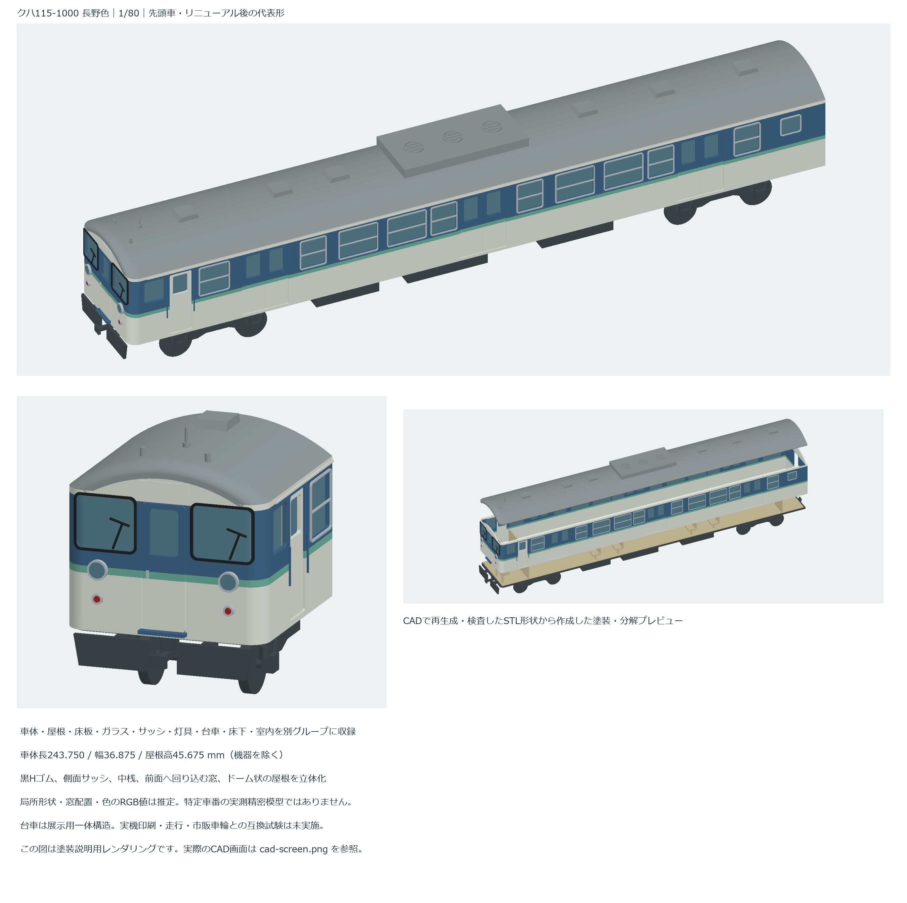
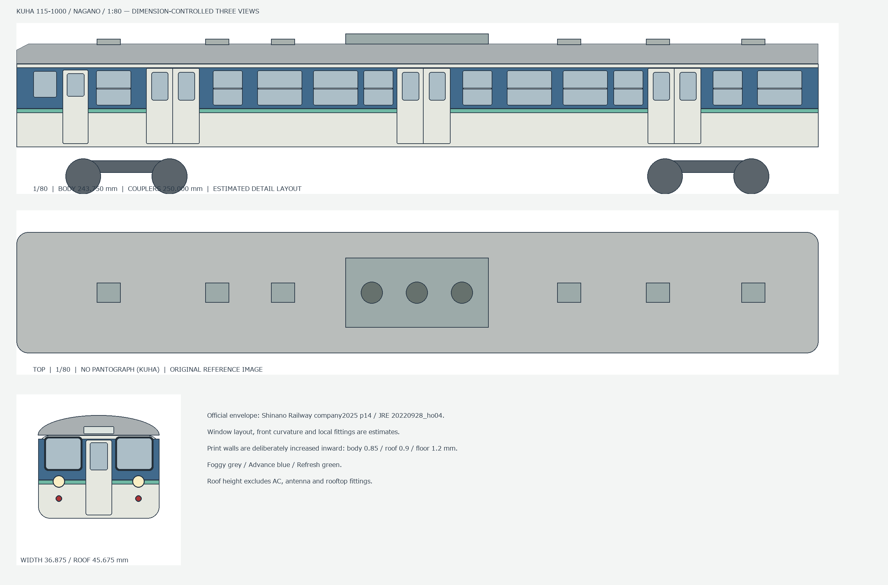
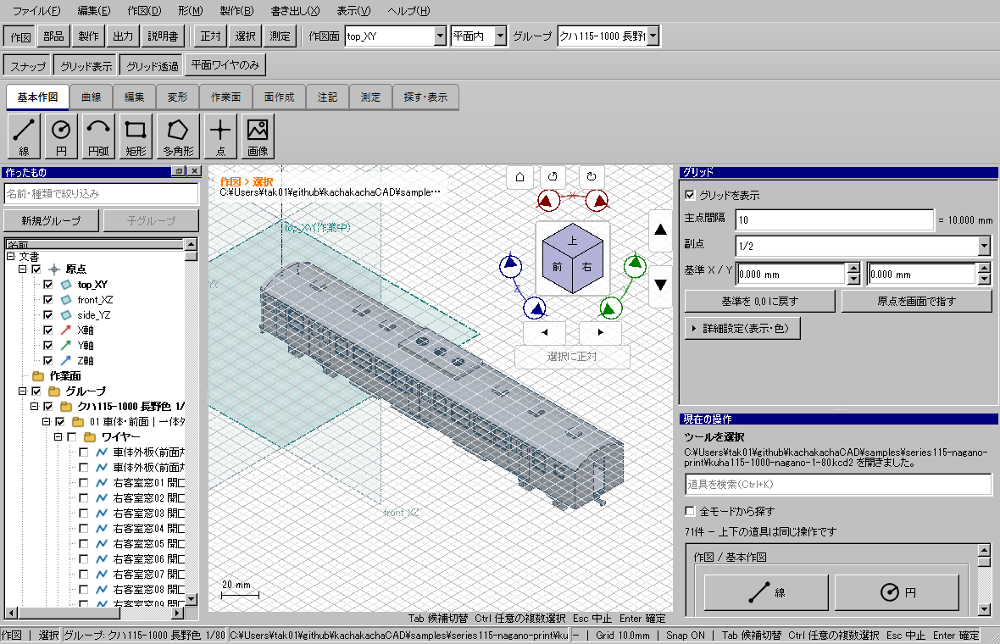

クハ115-1000 長野色
1/80・先頭車を部位別に印刷する
リニューアル後・黒Hゴム・集中冷房の代表形。窓を抜いた車体、曲面に沿う前面窓、Hゴム、側面サッシと中桟、屋根・床下・展示用台車・室内を編集可能なCAD部品で作成。
主要寸法は公開資料に合わせ、局所形状・窓配置・色は推定を含みます。特定車番の実測精密模型ではありません。実物の印刷・組立・走行は未確認です。
モデルと印刷データ
通常版129部品。分割版134部品。分割版は車体・屋根・床板・室内トレーを前後に分け、最長約123.75mmに抑えています。透明板・真鍮線などへの置換も想定しています。

CAD出力STLの実形状に、説明用の長野色を付けたレンダリング。実CAD画面や物理印刷品ではありません。
どのグループを印刷するか
| グループ | 部位と用途 |
|---|
| 01 / 02 | 窓抜き車体・雨樋・取付桟 / 取外し式屋根 |
| 03 / 04 | 銀サッシ・中桟 / 裏貼り透明板 |
| 05 / 06 | 客扉・手すり / 前面Hゴム・貫通扉・灯具・ワイパー |
| 07 / 08 | AU75・通風器・アンテナ / 床板 |
| 09 / 10 / 11 | 吊り脚付き床下機器 / 心皿付き固定台車 / 脚・座席一体の室内トレー |
| 12 | 埋込み三面図。参照のみ |
| 13 | 小型プリンタ用の8分割部品＋床板添え板。01/02/08/11の代わりに使用 |
ZIP内のSTLは部位別フォルダーへ整理し、各部品のXY中央・最下点Z=0へ移動済み。STEPは組立座標を保持。部品表とUUIDで対応を追えます。サポート、傾斜、収縮補正は使用プリンタに合わせて設定してください。
自作三面図をCADへ埋め込む

車体長243.750mm、幅36.875mm、屋根高45.675mm。三面を0.1mm/pixelで埋め込み、グループ12で表示を切り替えます。主要寸法以外の線は推定です。
検証済み配布CADでの実画面

Windowsの通常起動・イベントループ・描画を確認。部品属性の色名は保存していますが、現行CAD画面の部品は灰色表示です。上の塗装説明図とは区別してください。
全対象部品の閉ソリッド・正の体積・寸法、STEP再読込、STLの穴・辺の向き・退化・体積を確認。分割8部品を再結合し、分割前の4部位と同じ形状になるかも検査しています。